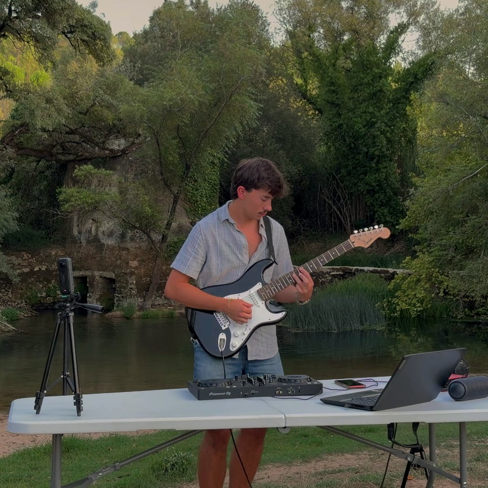
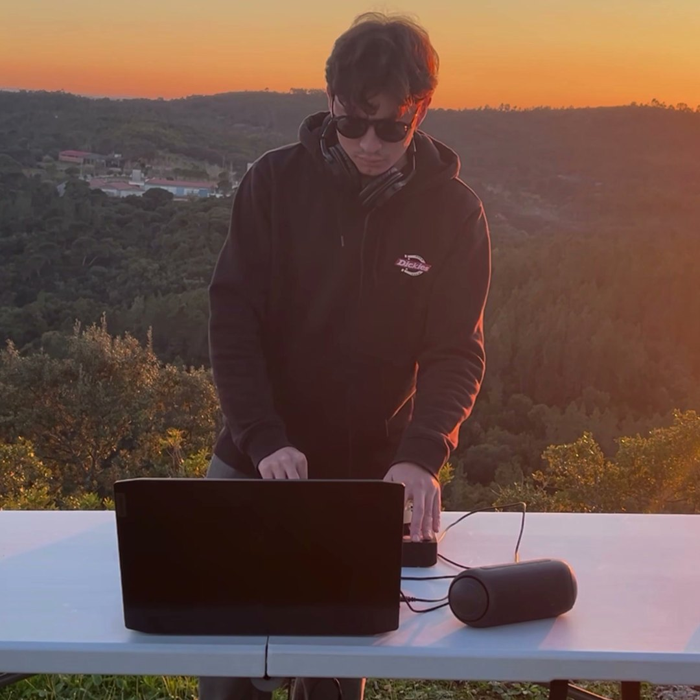
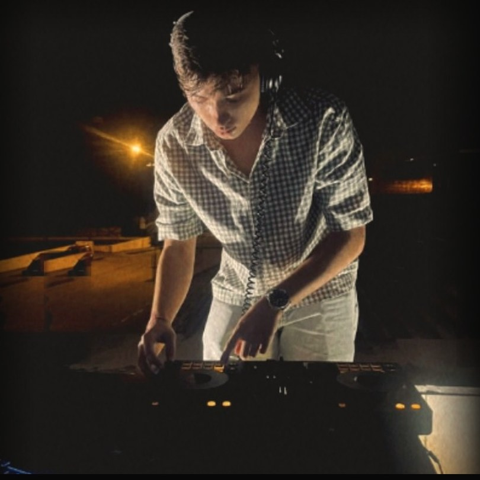
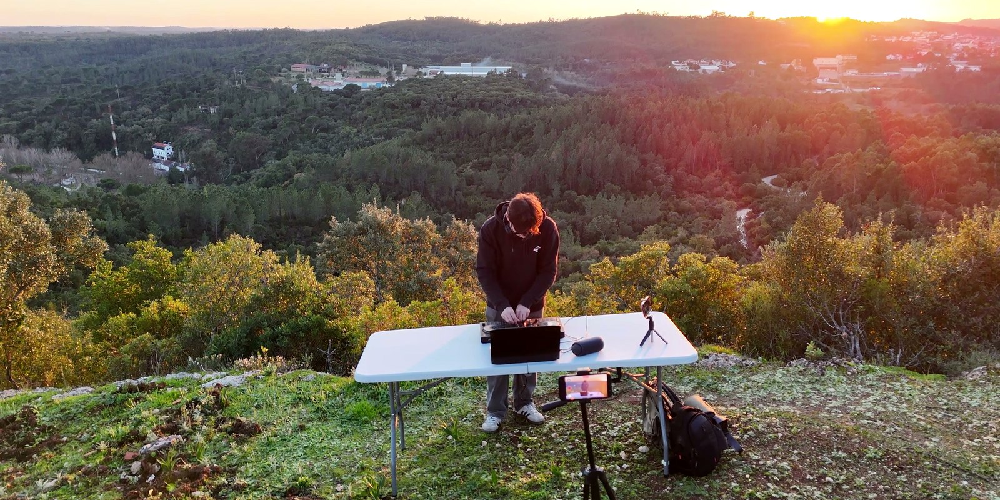
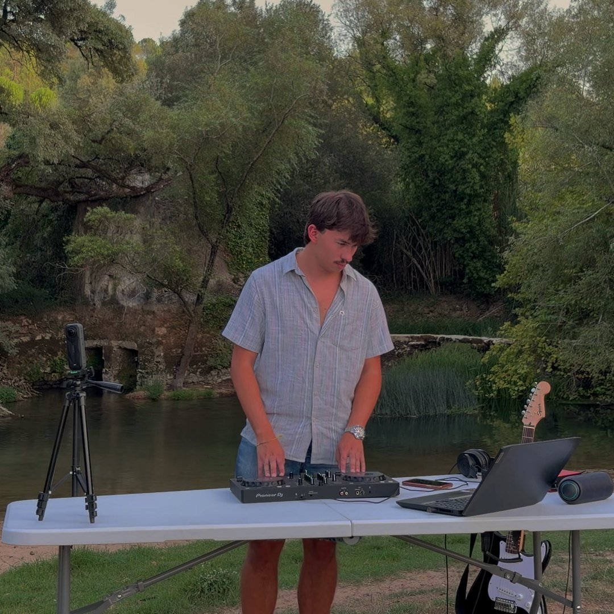
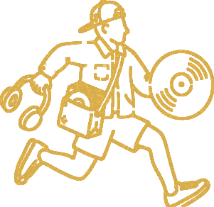

JOTTA-P é um DJ e produtor português com um fraquinho por grooves quentes, samples com pó e tudo o que põe as pessoas a mexer. Atrás dos decks há discos, instrumentos ao vivo e boa energia, sempre à procura do próximo momento jazzy e funky.
JOTTA-P is a Portuguese DJ and producer with a soft spot for warm grooves, dusty samples and anything that makes people move. Behind the decks it's records, live instruments and good energy, always chasing the next jazzy, funky moment.
SomSound
Música eletrónica com groove, com raízes no house e no disco, e passagens pelo jazz, hip hop, soul, R&B e rockGroove-driven electronic music, rooted in house and disco, with detours into jazz, hip hop, soul, R&B and rock
FormatoFormat
DJ set + instrumentos ao vivoDJ set + live instruments
Setup
Pioneer DDJ-FLX4 · Rekordbox
Baseado emBased in
Portugal
Fotos de imprensaPress photos





Livres para usar na promoção de JOTTA-P. Ficheiros em alta resolução a pedido.Free to use for promotion of JOTTA-P. High-resolution files on request.
Logos

Ficheiros PNG com fundo transparente disponíveis a pedido.PNG files with transparent background available on request.
Último setLatest set
Riverside Grooves: DJ set e guitarra elétrica ao vivo junto ao rio, em Portugal. French Touch e Disco House.live DJ and electric guitar set by the river in Portugal, French Touch and Disco House.
Instrumentos ao vivo + interface de áudio (guitarra, baixo, teclado MIDI ou bateria eletrónica, conforme o concerto)Live instruments + audio interface (guitar, bass, MIDI keys or e-drums, depending on the gig)
Auscultadores e todos os cabos para o controladorHeadphones and all cables to the controller
O espaço forneceVenue provides
Mesa estável, com cerca de 1,5 m de larguraStable table, about 1.5 m wide
2 tomadas junto à cabine2 power sockets at the booth
Entrada de linha estéreo para o PA (2 × jack ou XLR)Stereo line input to the PA (2 × jack or XLR)